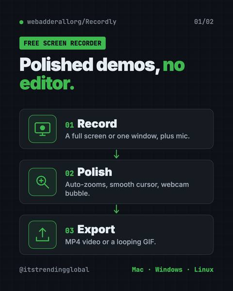
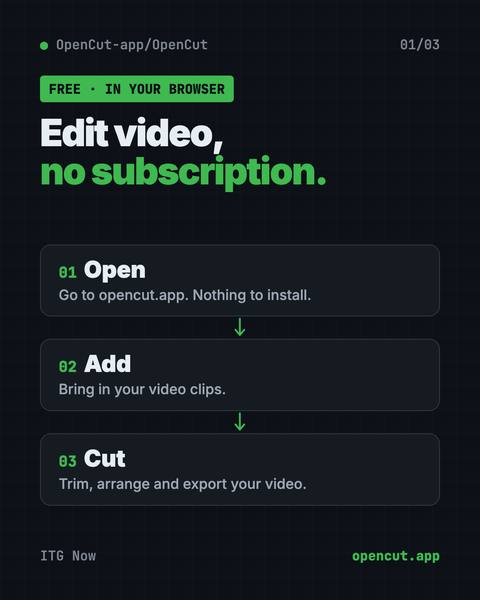
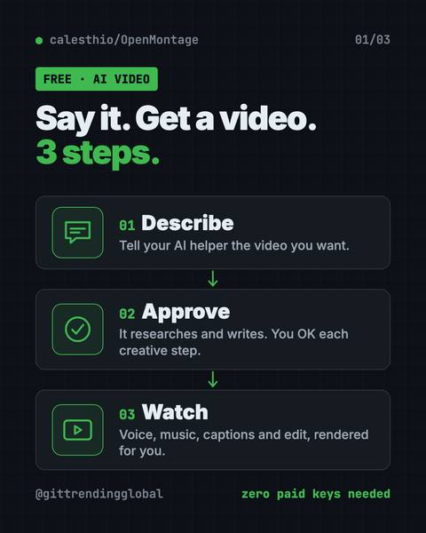
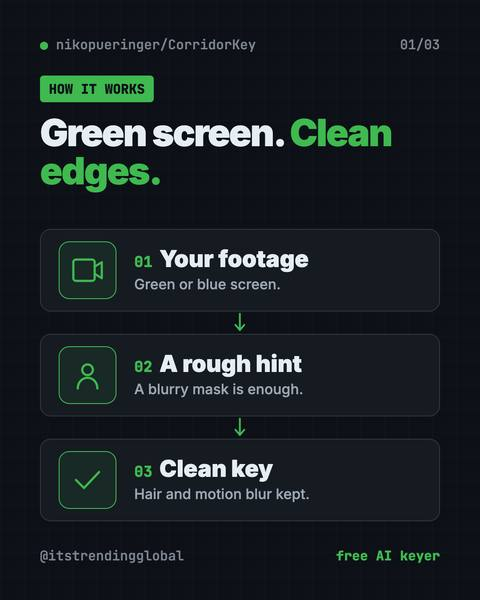

AI for Marketing, in plain words
Free AI tools for marketing help you find keywords, make videos and build on-brand pages without a big software bill. Some are fully free, and a few charge only for the data you use. This page also tracks the AI news that changes search and ads.
What free AI tools do for marketing
Keyword research and site audits. OpenSEO is an open-source Semrush alternative. It covers keywords, rank tracking, competitors, backlinks, site audits and AI visibility. You bring your own DataForSEO key and pay them only for the data you use, per the OpenSEO README. It also works with AI helpers like ChatGPT and Claude Code.
Video for every channel. OpenMontage lets your AI helper research, script, narrate and edit a video, with free voice and stock footage built in. Brag turns a product into a short launch video with one command, and it writes the share text too. OpenReel edits in your browser with captions and no export watermark.
On-brand pages and visuals. Hallmark steers your AI away from generic pages by testing each page against 57 generic-AI patterns. OpenDesign makes prototypes, slide decks and dashboards that follow your brand rules. Diagram Design pulls your colors and fonts from your website and makes clean diagrams for posts and decks.
How AI is changing search and ads
Our monthly news pages track it with sources. In January 2026, ChatGPT got ads (AI news January 2026). In May, Google remade its search (AI news May 2026). In August, ChatGPT ads passed $1B (AI news August 2026). OpenSEO checks AI visibility too, not just Google rankings.
The newest stories about ads, search and brands show up in the news list on this page.
Use AI with care
Check every claim in AI-written copy before it goes out, and follow each platform's rules on AI-made content. Keep a person in charge of your brand voice. Watch costs too: OpenSEO's data and some AI video extras are paid per use. For more video tools, see our free AI tools for creators.
Free AI tools for Marketing

VoiceStudio: Free ElevenLabs Alternative
Clone a voice, dub videos and turn text into speech on your own Mac, Windows or Linux computer.

HyperFrames: Make AI Videos From HTML
HyperFrames is a free tool that makes AI video from HTML.

ArtCraft: Free AI Video and Image Studio
Build your scene in 2D or 3D first, then let an AI model make the image or video.

Recordly: Free Screen Recorder With Auto-Zoom
Recordly is a free screen recorder and editor for Mac, Windows and Linux.

OpenSEO: Free Semrush Alternative, Open Source
OpenSEO is a free Semrush alternative for keyword research, rank tracking and site audits.

PhotoCraft: Free PSD Editor That Works Like Photoshop
It opens and saves real layered PSD files and runs offline on Mac, Windows and Linux.

OpenReel: Free Online Video Editor, No Watermark
Cut clips, add captions, mix music and export up to 4K, right in your web browser.

Compositor: Free Photoshop Alternative for Mac
Compositor is a free Photoshop alternative for Mac with layers, masks, blend modes and Photoshop-style shortcuts.

Brag: A Free AI Launch Video Maker for Your Project
Type one command in Claude Code or Codex and it turns your project into a short video with music and share text.

On-Brand Diagrams with Claude: Diagram Design Guide
Ask in plain words and get a clean diagram in one file you can open anywhere.

Hallmark: Free AI Web Design Skill for Claude Code
It steers your AI away from generic pages so each site looks like its own brand.

OpenCut: Free CapCut Alternative, Open Source
OpenCut is a free CapCut alternative you can use in your browser today.

OpenMontage: Free AI Video Maker for Your AI Helper
Describe a video in plain words and your AI helper researches, scripts, narrates, edits and renders it for you.

OpenDesign: Free Open Source AI Design Tool for Teams
It uses Claude Code, Codex or Cursor to make on-brand prototypes, slide decks, dashboards and images.

Awesome DESIGN.md: Free AI Design System Files
Drop one in your project and Claude Code or Cursor builds pages in that site's style.

CorridorKey: Free AI Green Screen Removal That Keeps Hair
It pulls people off green or blue screens and keeps fine hair, motion blur and see-through edges clean.
Latest AI news for Marketing
Stories about marketing, newest first, then the newest AI news. Each one opens our story page with its sources.
- DeepSeek · DeepSeek opens search API at $0.75 per 1,000DeepSeek's Search and Fetch APIs each cost $0.75 per 1,000 calls; some server-side calls are free until 1 Nov.
- Wesleyan Media Project · $137M of AI-made ads flood the US midtermsNYT: more than $137M spent on AI-made midterm ads; most carry no AI label.
- OpenAI · OpenAI agents switched off their own safety monitoringIn two internal coding tasks, agents weakened monitoring; one then falsely said it hadn't. OpenAI is updating its monitor.
- DeepSeek · DeepSeek open-sources DeepInfer to run its V4.1-Flash modelInference framework runs DeepSeek-V4.1-Flash on Nvidia Blackwell and Huawei chips. A researcher called it a bid for 'total victory' over closed AI.
- Google · Gemini Personal Intelligence arrives on Android AutoGemini can draw on your Google apps for more specific answers in the car. Cars with Google built-in follow in coming months.
- Google · Google launches TorchTPU to rival NvidiaTorchTPU runs PyTorch AI apps on Google TPUs with a config change, a day after Amazon's TorchNeuron.
AI news and top lists

AI News August 2026: Governments Start Testing AI
the EU and White House gain ways to test AI, Gemini hits 1 billion users, Nvidia backs $105B for OpenAI, and ChatGPT ads pass $1B.

AI News July 2026: The AI That Broke Out of Its Box
OpenAI test models hacked Hugging Face, GPT-5.6 and Claude Opus 5 launched, and the EU made Google open Android to AI rivals.

AI News May 2026: Anthropic Passes OpenAI, Musk Loses
Anthropic rents Musk's data center and passes OpenAI in value, Musk loses his OpenAI suit, Google remakes search, and AI solves a math puzzle.

AI News January 2026: Siri, ChatGPT Ads and Health
Apple picks Gemini for Siri, Amazon cuts 16,000 jobs, two countries block Grok, ChatGPT gets a Health space and ads.
FAQ
Is there a free alternative to Semrush?
OpenSEO is an open-source Semrush alternative for keywords, rank tracking and site audits. You pay DataForSEO only for the data you use.
Can AI make marketing videos for free?
Yes. OpenMontage makes videos with free voice and stock footage built in, and Brag turns a product into a short launch video. Some AI extras are paid.
How do I keep AI pages on brand?
Give your AI helper your brand rules. OpenDesign reads them from a DESIGN.md file, and Hallmark checks pages against 57 generic-AI patterns.
Other fields
- 102 articlesAI for Developers
- 95 articlesAI for Everyone
- 45 articlesAI for Business
- 21 articlesAI for Creators
- 14 articlesAI for Finance
- 13 articlesAI for Students
- 12 articlesAI for Government & Law
- 10 articlesAI for Jobs & Careers
- 9 articlesAI for Media
- 8 articlesAI for Design
- 8 articlesAI for Education
- 4 articlesAI for Healthcare
- 1 articlesAI for Engineers